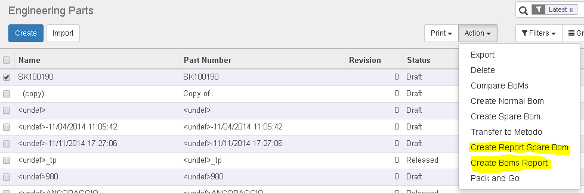
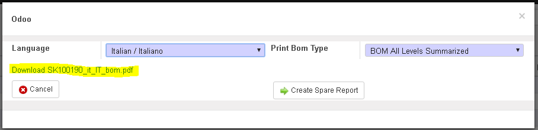

<section class="oe_container oe_dark">
    <div class="oe_row oe_spaced">
        <h2 class="oe_slogan">Plm Report Language Helper</h2>
        <h3 class="oe_centeralign">Odoo version covered : 10.0</h3>
        <div class="oe_span12">
            <p class="oe_mt32">
            	When you have to print report's in different languages, and you need a faster tool to manage it, this module allows you to do such a think.
				Using a simple wizard interfaces you extend the capability of your plm module for producing pdf in different languages.
				            

            </p>
            <p class="oe_mt32">
 			How it works:
            	<ul>
					<li>Go to Search on Engineering Parts and select a product</li>
					<li>Go to the action Menu and select the <b>Create report spare bom</b> or <b>Create Boms report</b> 
						
					</li> 
					<li>Chose the option that you prefer and click in the Create Button
						
					</li>
					<li>Click to the download pdf file
						
					</li>
            	</ul>
            </p>
         </div>
    </div>
</section>